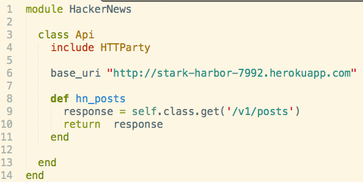
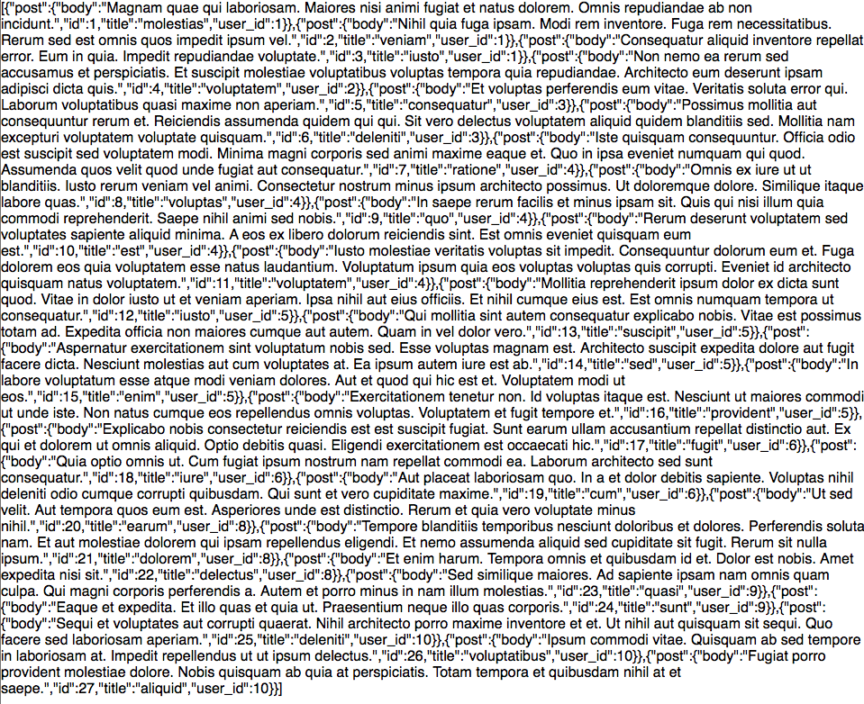
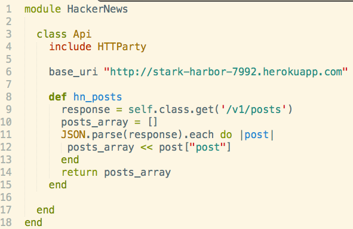
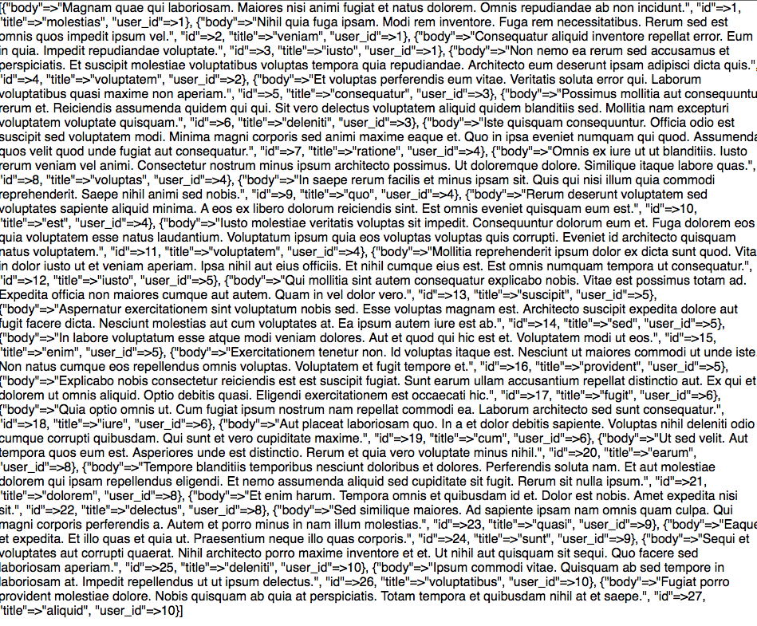
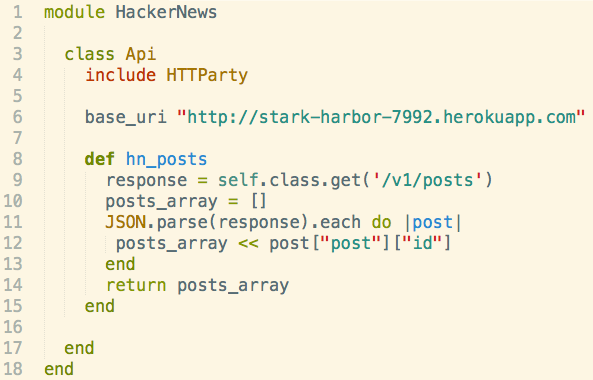
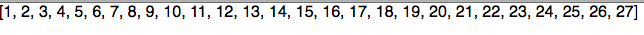
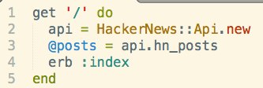
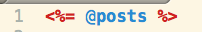

Background
It's almost been an entire week since I wrote something, but given today's topic, I thought I would take some time to explain it. Yesterday at DevBootCamp we were given an assignment to create a HackerNews API. I won't get into the specifics of how it works, but the idea is that you set up controllers that will query their database and bring out objects that are translated to json. Here are a few examples of a controller in our HackNews API.

The params on the last example come from the route set-up on the line before it.
Below is an image of the API routes and what each route does.(It is implied that each API route sends back a JSON object)

Consuming APIs
Now that we know how to setup APIs, lets try to "consume"/use them.
JSON
Well since our API will be returning JSON, it will probably be best if we figured out what JSON is. JSON stands for JavaScript Object Notation, a lightweight syntax for storing and exchanging data between machines. Well what the heck does that mean? Lets take a look with our challenge today.
First up is our model. In a typical app, we would query a API url and throw the contents of the returned JSON object into our own database since APIs have a limit to the number of times you can query(even with OAuth). But for simplicity's sake, we will just query the database and display the results on a page.
This is our model. We installed the gem 'httparty' in our gemfile and required it inside our config file 'environment.rb' We create models to query an API so that if an API's URL changes, we can just change the url in our model instead of having to change it in every HTTP route in our controller. (Having our specific queries as methods inside a class model is just a design decision). I want to bring attention to lines 9 and 10. Line 9 queries a specific route in our api and returns a JSON object. If we were to leave line 10 alone, we would get the following back in our erb view.
Believe it or not, This is a STRING!!!! JSON is passed from one machine to another as a string, so we can actually see the innards of each post object within our JSON string. To effectively use the objects, we need to change our JSON string (and the translated strings inside our JSON) into its orginal form. Lets check out our modified model.
Line 11's JSON.parse is a method that changes our JSON string into an object(In this case, an array). This allows us to call each to grab post objects within our JSON array and throw them into our local array. What we return is an array of JSON objects. Notice how I'm calling an attribute["post"] on each post object in my JSON array. This gives me the following back:
It's hard to notice a difference between this image and the previous erb view, but the subtle differences are very important.In the previous erb view, you were viewing a JSON string. Notice in the previous erb view that there was a key ["post"] associated with a hash containing the innards of each post(as a hash) In this current view, We are viewing an ARRAY of Post Objects. The ["post"] key was already called on line 12 our our model, so we essentially have the innards of each post in an array. Watch what happens when I call a particular key (id) in my model upon this array of Post innards.
Model: Look at line 12
Corresponding erb view:
We selected the id attribute from each Post in our model, and returned back a set of id's associated with each Post object in a parent array.
Here is the corresponding controller and view code that I used to display the changes in the model:
Controller
View
